My Journey
Explore my education, internship experience, awards and certificates.
Diploma
POLITEKNIK MERSING JOHOR (PMJ)
Internship
UNIVERSITI TUN HUSSEIN ONN MALAYSIA (UTHM)
Degree
UNIVERSITI TEKNIKAL MALAYSIA MELAKA (UTeM)
Awards
RECOGNITION & ACHIEVEMENTS
Certificates
PROFESSIONAL CERTIFICATES
Academic Excellence
My Diploma in Information Technology (Digital Technology), specializing in Software Development, provided a strong foundation for my academic and professional journey. Through my studies at Politeknik Mersing Johor, I developed essential technical knowledge and practical skills that prepared me for further studies and future opportunities in software development.
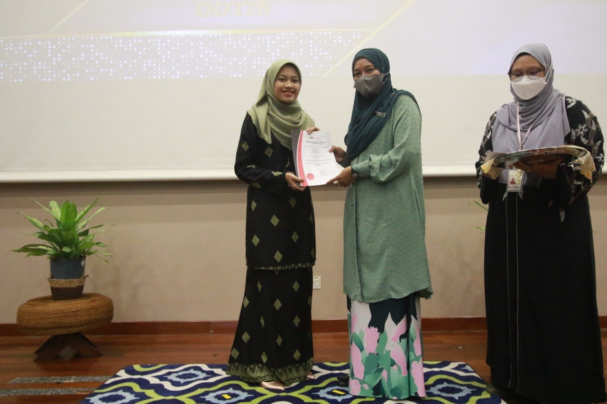

Final Year Project
As the team lead for our Final Year Project, e-LI Inbound UTHM, I coordinated the team’s work throughout the development of the project, from planning and design to implementation and presentation. Our project received Gold Awards at both the SPEx and PIEx competitions, recognizing the team’s hard work, collaboration, and the value of our solution.
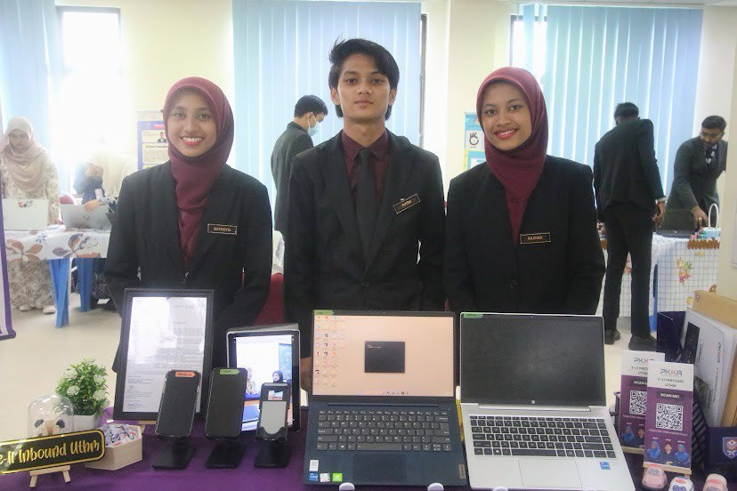

Kelab Pembimbing Rakan Siswa
Beyond academics, my diploma journey was also about growth as a well-rounded individual. These experiences highlight my active participation in activities that built crucial soft skills, from leadership and teamwork to professional etiquette and industry collaboration, preparing me for the professional world.
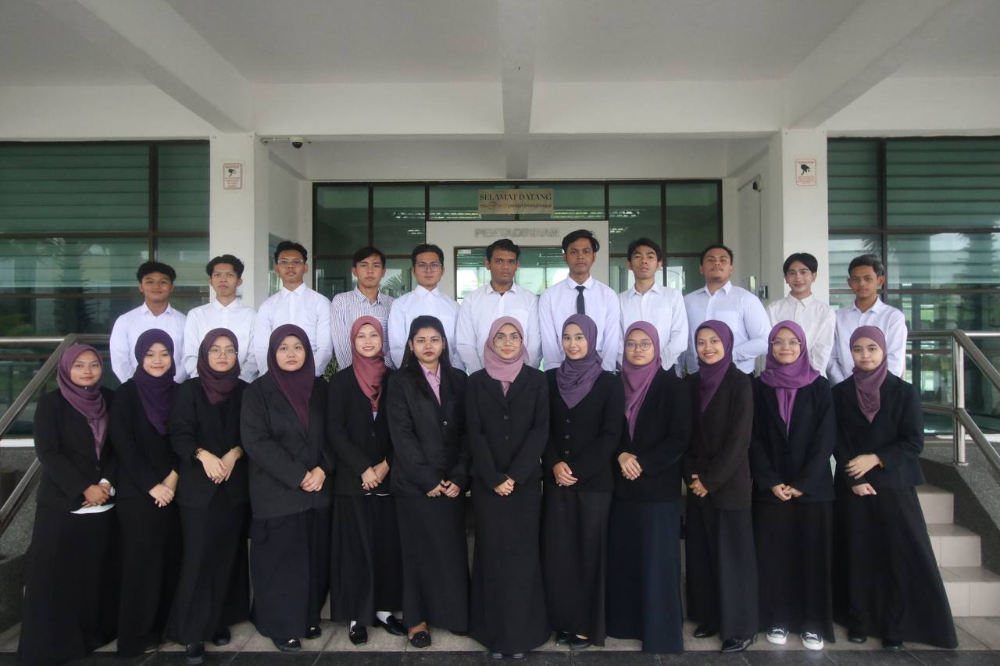

Internship
During my internship at the Centre for Leadership and Competence (PKK), Universiti Tun Hussein Onn Malaysia (UTHM), I worked closely with my supervisor and the Centre Director. My responsibilities included maintaining PKK’s systems, developing a file management system, and managing the Centre’s social media by preparing and publishing posts. This experience allowed me to apply my technical and communication skills while contributing to PKK’s daily operations.
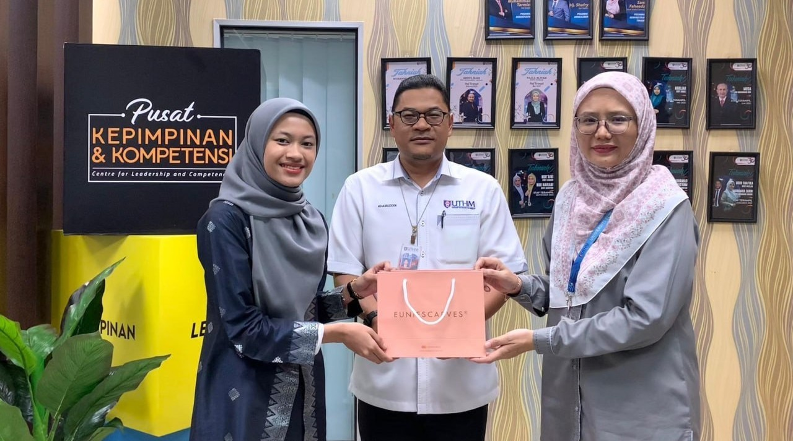

Team Collaboration & Networking
Beyond individual tasks, my internship was a journey in collaboration and professional integration. This section showcases my active participation in team meetings, brainstorming sessions, and company events. It reflects my ability to communicate effectively, learn from senior colleagues, and build a network of professional contacts that are invaluable for career growth.
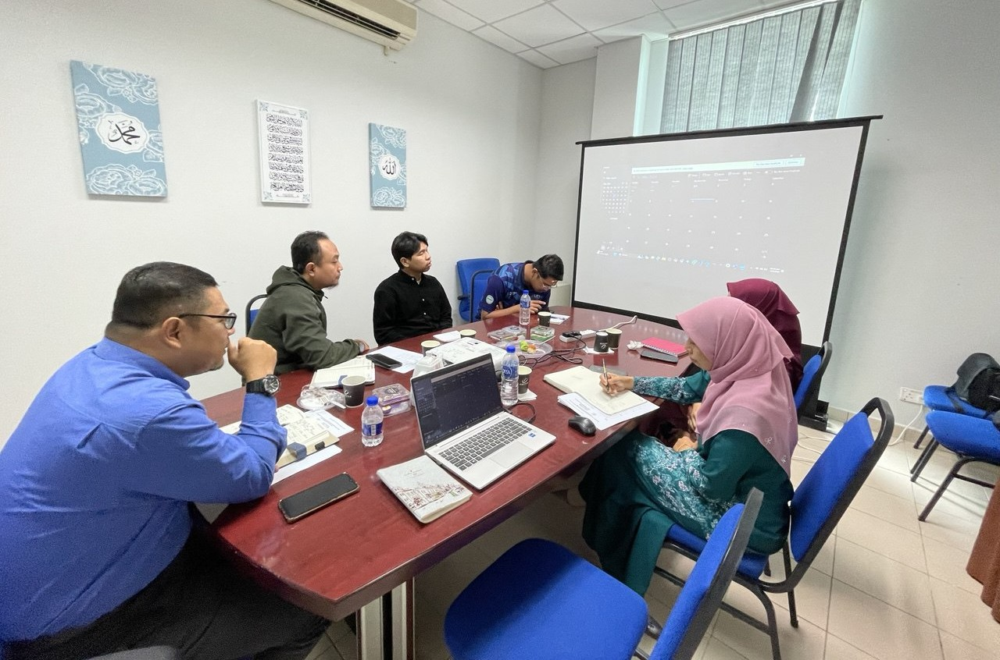

Skills Development & Training
An internship is a critical learning curve. This category documents the new skills and knowledge I gained, from mastering new software and tools to understanding industry-specific workflows. It represents my commitment to continuous professional development and my eagerness to expand my capabilities beyond the classroom.
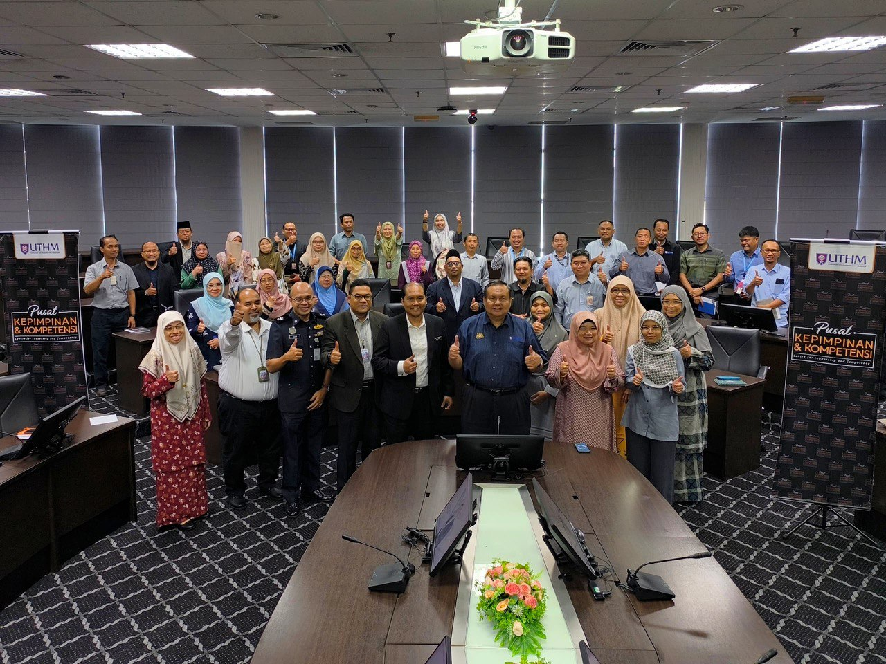

Final Presentation & Achievement
The culmination of my internship was presenting my project's outcomes and achievements to the department. This final presentation was a chance to reflect on my journey, articulate the value I added, and receive feedback. It stands as a testament to my growth and the successful completion of my professional engagement.
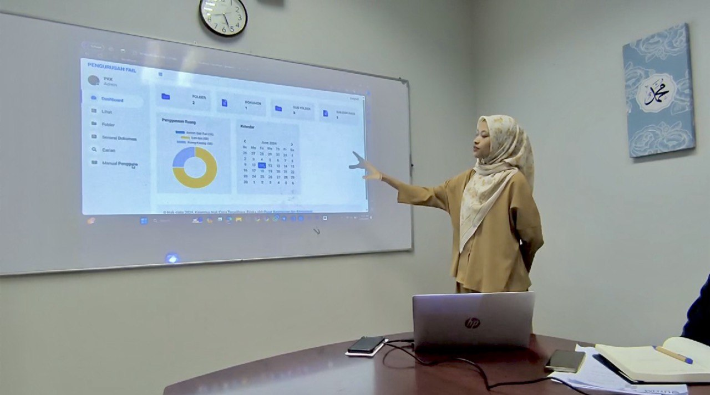

Academic Excellence
My degree was a period of intense academic focus, leading to significant achievements. This section celebrates the high grades, dean's list recognitions, and academic awards that are a testament to my dedication and intellectual curiosity throughout my university life.
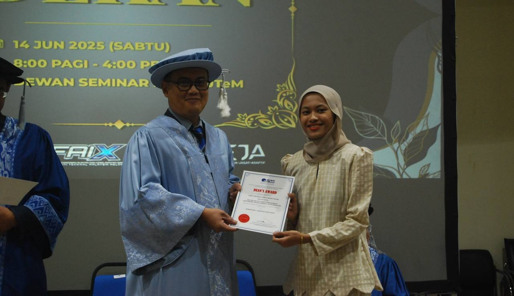

Workshop II
As the team lead for Workshop II, I coordinated the group’s efforts throughout the development of a Hardware Deployment Coordination System, guiding the team from planning and design through implementation and presentation. Our collaborative work earned a Gold Award, recognizing the quality of the project and the team’s commitment to delivering an effective solution.
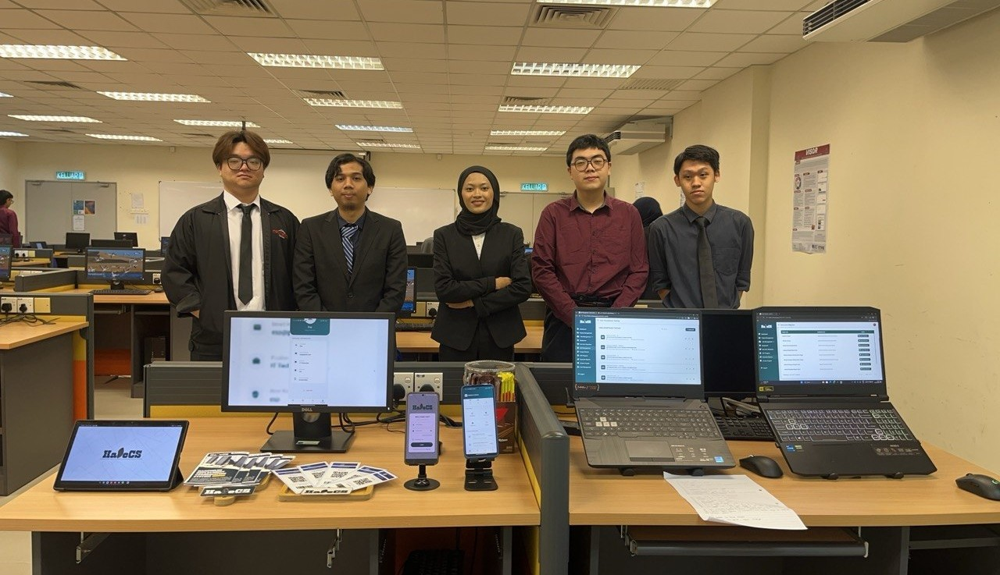

Final Year Project
As the developer of my Final Year Project (PSM), I created the Unified Digital Archiving System with Automated Document Classification. The system was designed to organize digital records by automatically classifying documents, helping make information easier to manage and retrieve. This project allowed me to apply my software development skills to a practical document management solution.
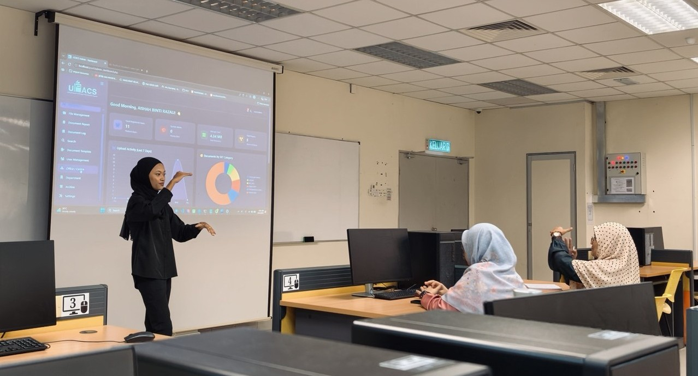

Kor Sispa UTeM
As a member of the Kor Sispa UTeM uniformed corps, I was entrusted with the role of Chief of the Multimedia Exco, supporting the corps through multimedia coordination and teamwork. I have completed Latihan Asas APM, Kursus First Responder Life Support (Level 1), Kursus Pengurusan Pusat Pemindahan, Kursus Bakal Pegawai, and Kursus Metodologi Latihan. I am now preparing to be commissioned as a Leftenan Muda Angkatan Pertahanan Awam Malaysia (APM).
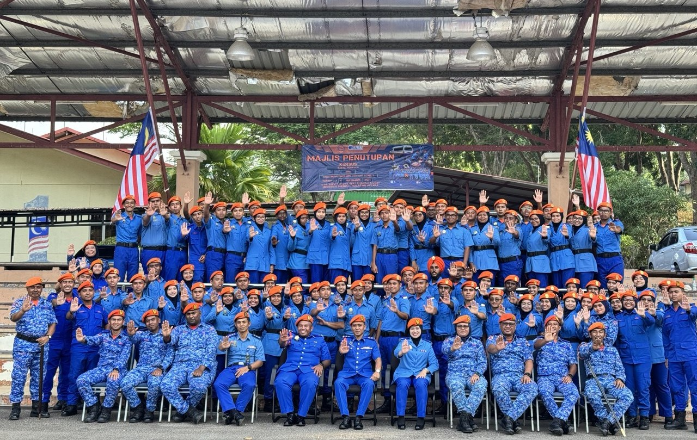

Graduate Diploma
I completed a Diploma in Information Technology (Digital Technology), specializing in Software Development, at Politeknik Mersing Johor. Throughout the programme, I built a strong foundation in software development and strengthened my technical and problem-solving skills through academic projects and practical learning.
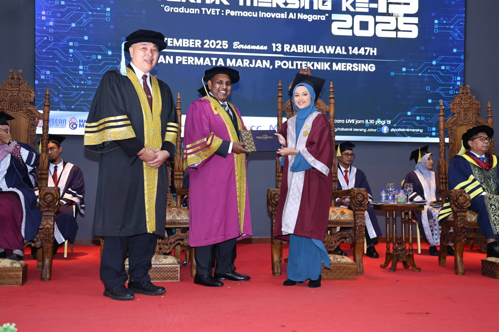

SPEx Competition
As team lead for e-LI Inbound UTHM, I guided my team in developing and presenting a digital project aligned with the United Nations Sustainable Development Goals (SDGs). Our project earned a Gold Award at the Student Project Exhibition (SPEx), recognizing its innovation and contribution to sustainable development.
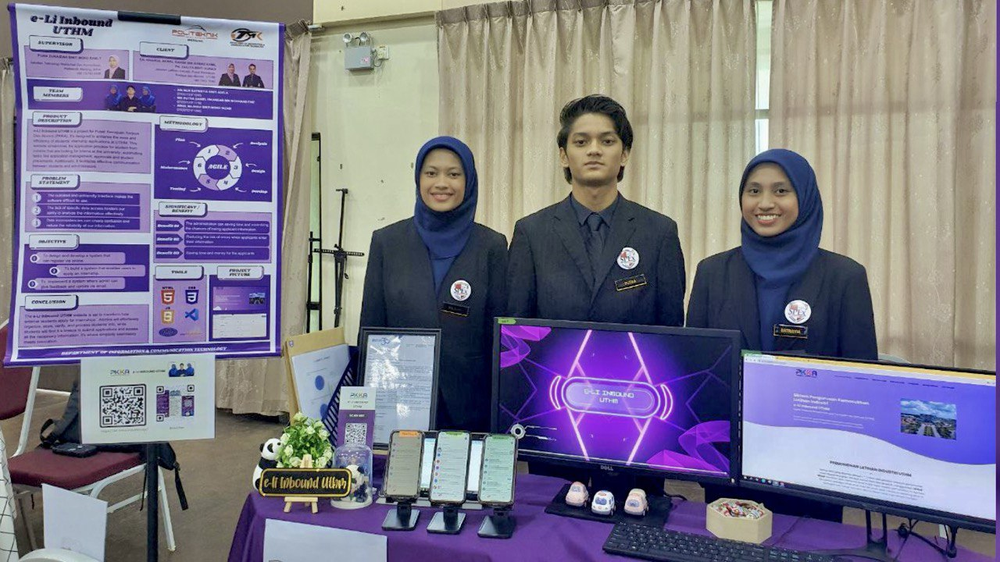

PIEx Competition
As team lead for e-LI Inbound UTHM, I guided my team in developing and presenting our project at the Politeknik Innovation Exhibition (PIEx). The project received a Gold Award and was recognized as the 2nd Best Overall Project, reflecting its innovation, practical value, and our team’s collaborative effort.
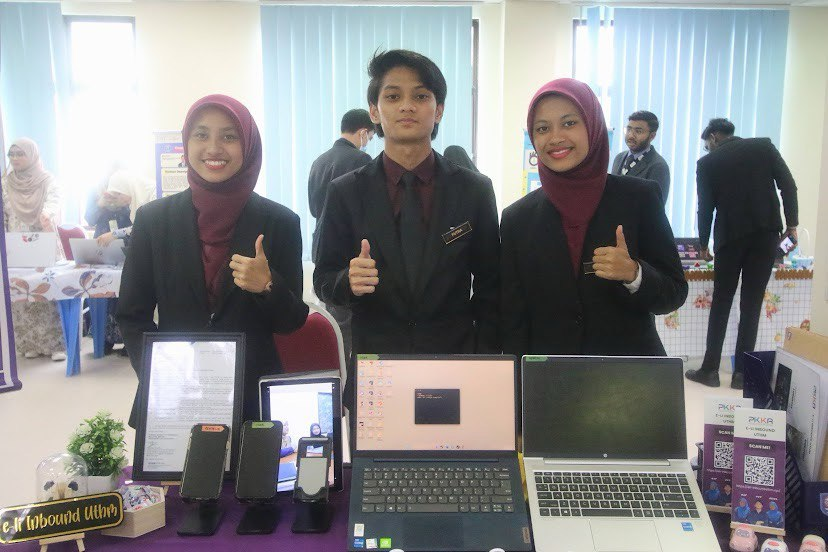

Workshop II Competition
As the team lead, I coordinated the development and presentation of our Hardware Deployment Coordination System for the Workshop II competition. Our project received a Gold Award, recognizing the team’s collaboration and the quality of our solution.
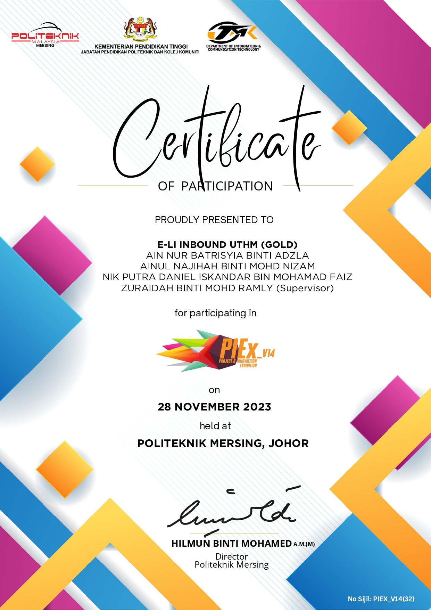

Gold Award - PIEx V14
Award-Winning Innovation
Led the development of an innovative digital solution that secured the Gold Award at the Politeknik Mersing Innovation Exhibition (PIEx V14). The project was evaluated for its technical complexity, market viability, and user-centric design, demonstrating excellence in problem-solving and execution.
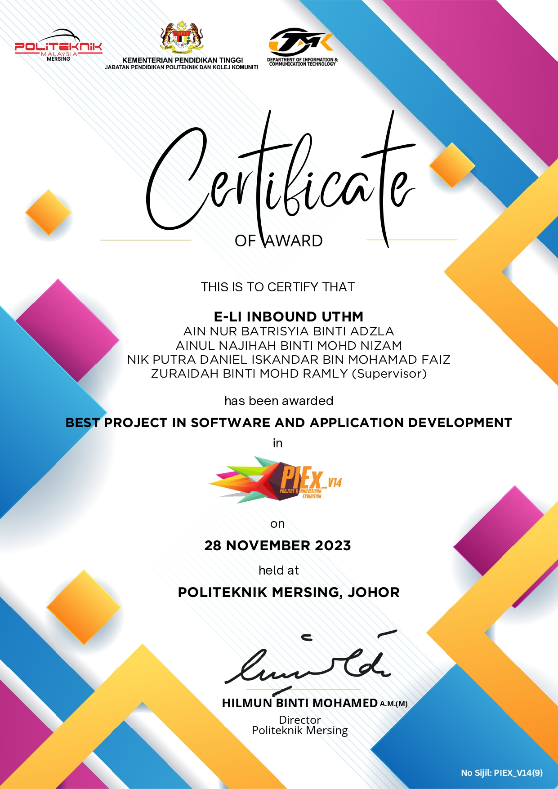

Best Project Award
Software and Application Development
Awarded "Best Project" in the software category for creating a highly functional and intuitive application. This recognition highlights proficiency in clean coding, efficient backend logic, and a strong focus on delivering an exceptional user experience.
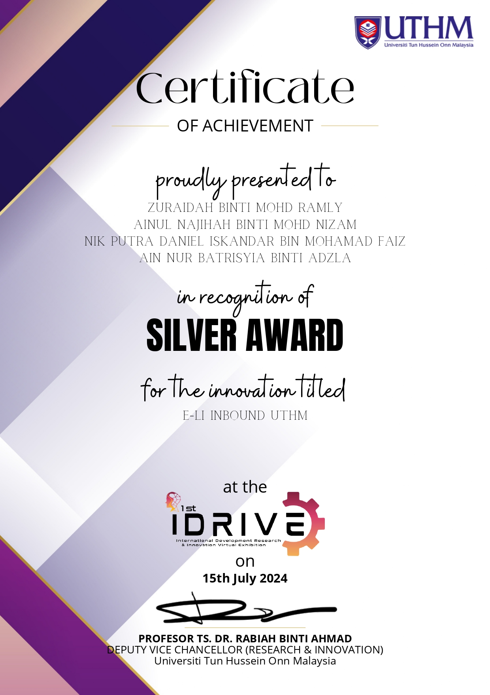

Silver Award
International Development Research & Innovation
Achieved international recognition with a Silver Award at the International Development, Research, and Innovation Exhibition (IDRIVE). This honor celebrates a research project that contributed valuable insights and innovative solutions to the global technology community.
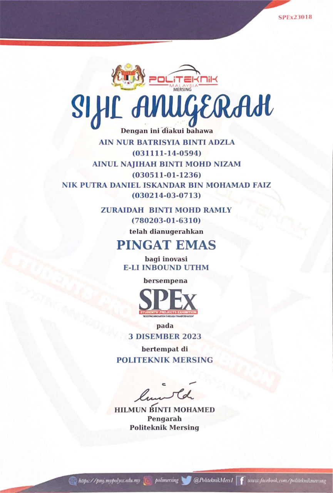

Gold Medal Award
SPEx 2023 Innovation Exhibition
Honored with the Gold Medal at the prestigious SPEx 2023 Innovation Exhibition. This award signifies the project's top-tier ranking, acknowledging its outstanding creativity, technical merit, and potential for real-world impact among a competitive field of innovations.
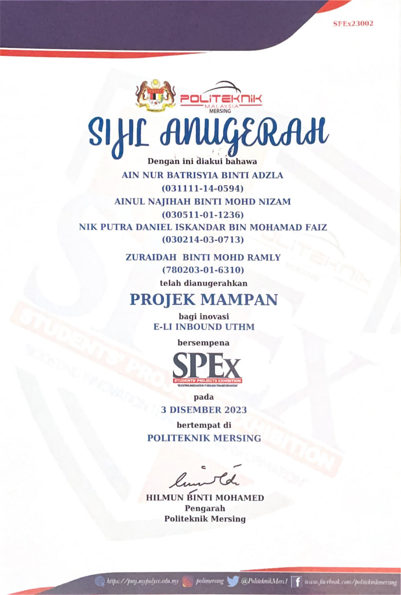

Sustainable Project Award
Impactful Green Technology
Recognized for integrating sustainable practices into technology with the "Sustainable Project Award." This accolade underscores a commitment to developing solutions that are not only innovative but also environmentally conscious and socially responsible.
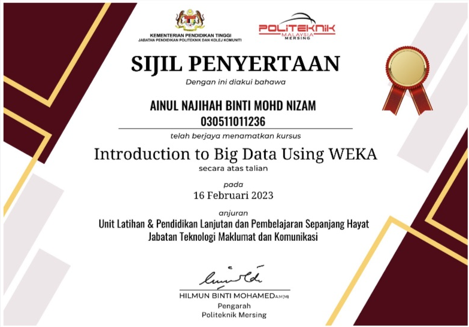

Big Data Certification
Big Data Analysis using WEKA
Earned a professional certification in "Big Data Analysis using WEKA," validating advanced skills in data mining, machine learning algorithms, and predictive modeling. This training enables the extraction of actionable insights from complex, large-scale datasets.
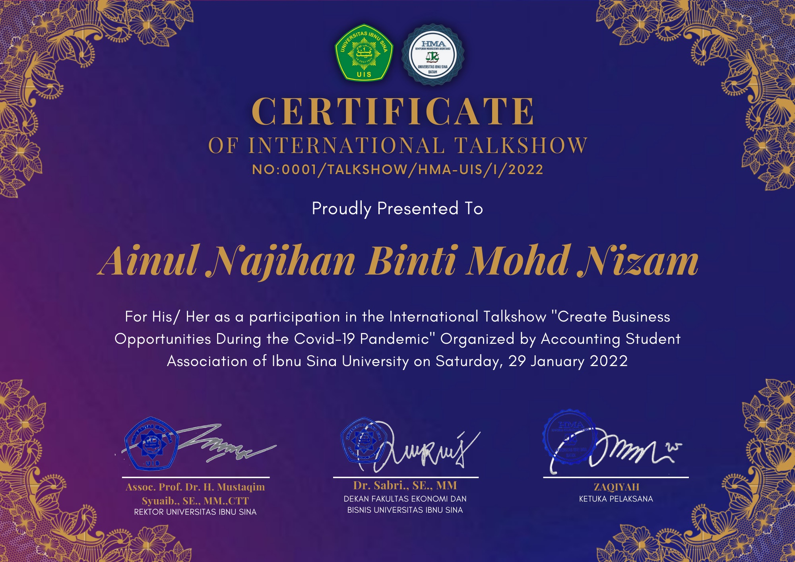

International Talkshow
Global Business & Entrepreneurship
Participated as an attendee in an "International Talkshow on Global Business & Entrepreneurship," gaining valuable global perspectives on market trends, startup strategies, and leadership in the digital economy. This experience broadened my professional network and international business acumen.